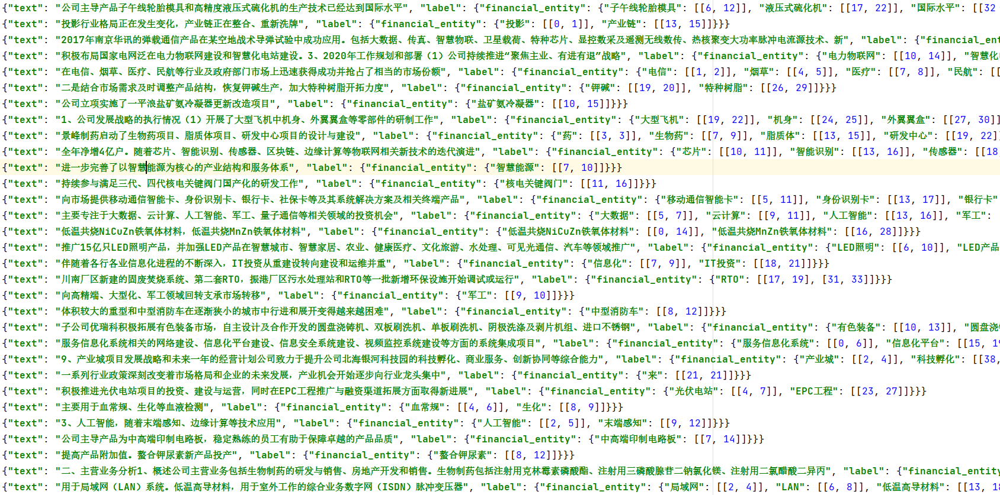
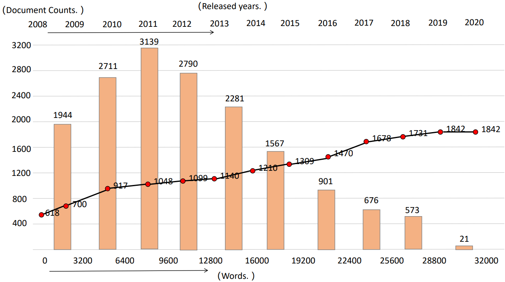
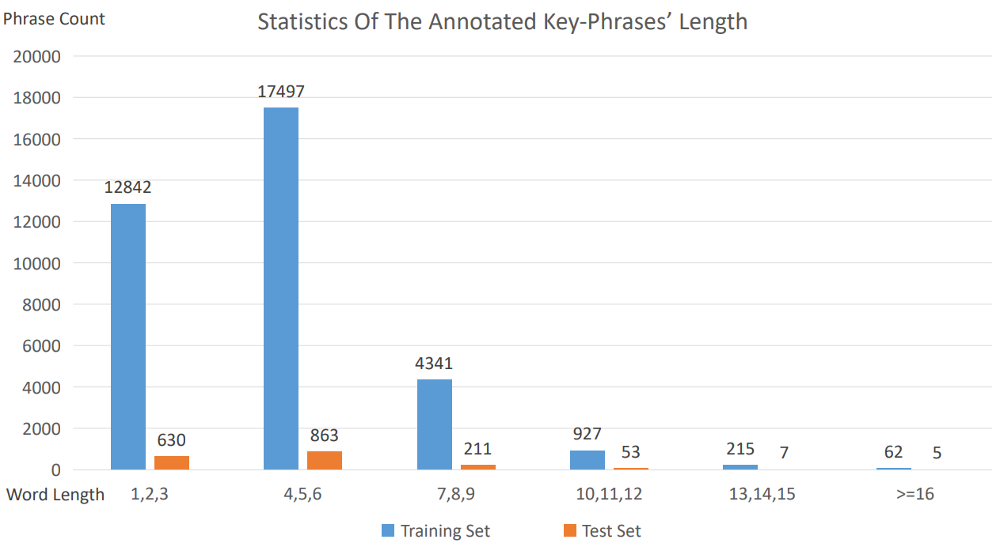

Fintech Key-Phrase
We propose a new dataset, Chinese Financial & High-tech Dataset (Fintech Key-Phrase) in Information Retrieval, which is derived from the publicly released Chinese Management’s Discussion and Analysis (CMD&A). To the best of our knowledge, together with more than 1.2K human-annotated instances, Fintech Key-Phrase is the largest also reliable Chinese benchmark for the Expression-level Information Extraction task.
DataSet Statistics
The High-tech CMD&A annual reports we collect are total more than 16,600 documents, and the documents have recorded up to 2692 different companies' annual business reports. The high-technology CMD&A documents contains about 11171 words in average, the maximum length and the minimum length in the documents is 115 and 32006, respectively.
The below Figure describes the statistics of the document lengths and the document released time in different interval.
Train & Test Set Split
The training set we split contains annotated more than 35,884 Fin-tech domain key-phrases which contains 11,434 different key-phrases after removing duplicated phrases, and the test set contains more than 1769 Fin-tech key-phrases which contains 1,439 different key-phrases after removing duplicated phrases.
The Figure below statistics the key-phrases' counts of different length segment intervals.
From the statistics, we can obviously observe that the majority of Fin-tech domain key-phrases are scattered in the length range from 1 to 6, within a smart part of key-phrases whose length is more than 7. This observation indicate that, generally, the key-phrases in which the financial experts are interested is short and simply.